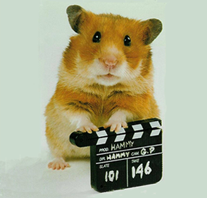

04-Apr-2017 | Milku
...and not finding one on the riverbank.
Thoughts of Sulu the Bionic Hamster, in the Captain Underpants books, made me wonder whether I could find any other literary hamsters or, even, hamster stars in films or TV shows. I’m struggling. Why is it that mice and chipmunks seem to dominate the media? In my opinion, hamsters would be a far better choice for any budding author or film maker.
A few intrepid hamsters have tried to buck the trend and I’ll bring them to your attention in my next posts. The first is “Tales of the Riverbank”. Based on a Canadian idea, and a feature of British children’s TV in the 1960s and 1970s, it sounds brilliant – live action and the hamster is the main character. It was popular too - sold to 34 countries around the world! And apparently it is ranked 79th in the UK Channel 4's 2001 poll of the 100 Greatest Kids' TV shows.
You can find out all about the history of the show on Wikipedia or these websites: Further Tales of the Riverbank and Pop Culture Addict.
The main character was Hammy Hamster. I guess that’s why some of my humans refers to me as Hammy. Looking at them, I’d suggest they watched some of the earliest shows!
I found this picture of him on the Further Tales of the riverbank website.
Handsome, don’t you think? It looks just like me!
But is very much not like me. The animals used to film the series were all female because female animals were thought to be much calmer. Ridiculous!
I’m disappointed that the 2008 feature film resorted to using puppets. I’ll bet the rats gave the film makers too much trouble. But it did have Ardal O'Hanlon giving Hammy his voice so how cool is that.
So no hope of finding a hero on the riverbank. Maybe a pin-up though...but that is another story.